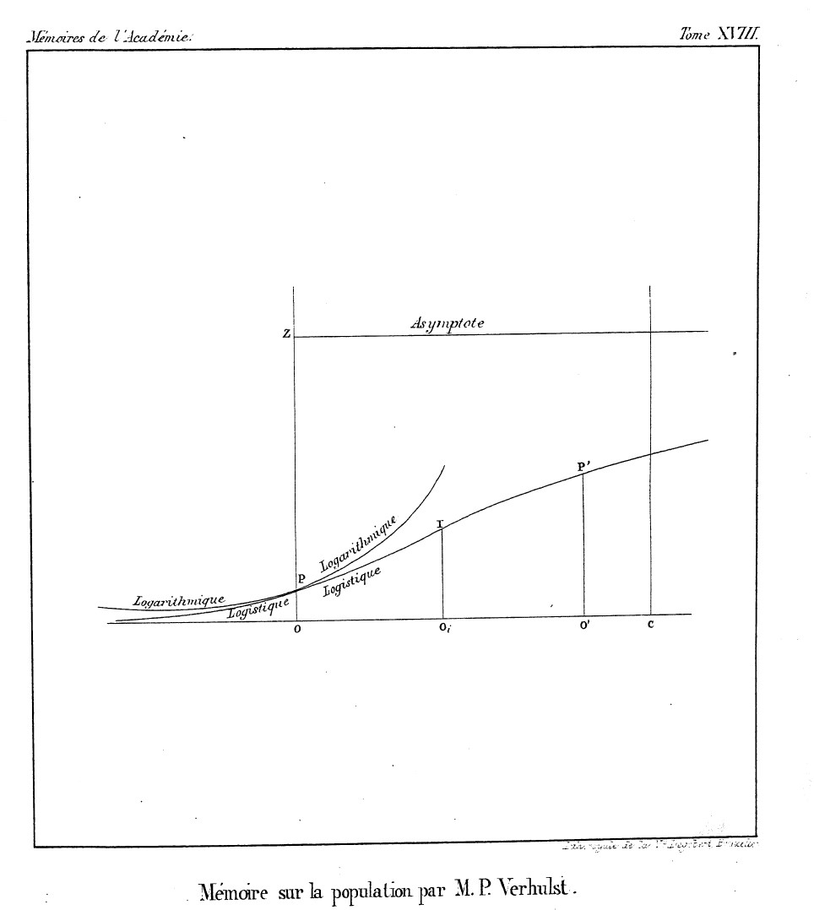

Analytics Portfolio
Introduction
When introducing machine learning models to newcomers, we often begin by showing the fine distinction between classification and regression algorithms, and following up by giving some examples and maybe even demonstrations of models that fall under those two groupings. Most commonly, we begin this discussion with the linear and logistic regression models as an example for regression and classification algorithms respectively.
It is at this point that the newcomers reach a rather strange aspect of modelling in data science and analytics, that is – how on Earth are linear regression and logistic regression not both regression algorithms?! In fact, many sources online will simply introduce logistic regression as a classification algorithm and give no further explanation as to why that is the case. [1]
This article seeks to put this inconsistency to rest, and hopefully we can all walk away with a better appreciation for what goes on under the hood when you call LogisticRegression() from your preferred library.
Recap on Regression and Classification Algorithm
First things first, let’s make sure we all understand the difference between a regression and a classification algorithm.
In general, regression algorithms are defined as algorithms that aim to form predictions on continuous variables, while classification algorithms work on discrete variables. More specifically, they both attempt to figure out a mapping function that maps some set of input variables into some output variable Y, in various forms depending on the specific model used.
So a regression algorithm’s job is to regress the inputs into some continuous estimate,

GIF source: https://mlfromscratch.com/linear-regression-from-scratch/#/
And a classification algorithm’s job is to classify the inputs into some discrete grouping,

GIF source: https://www.mql5.com/en/articles/584
Other than that, there really isn’t much else to distinguish regression and classification algorithms. Although depending on your definitions, some overlap may exist between the two groups, as we will soon see in the case of logistic regression.
What is Logistic Regression?
 Now to understand what logistic regression is, let’s first try to parse out what each word in the phrase means. This, as you will soon see, leads us into a surprisingly messy and intriguing tale of 19th and 20th century mathematics.
The logistic function and the term ‘logistic’ were first used in a series of papers by French mathematician Pierre Francois Verhulst, as a means to mathematically describe the growth of a population under resource constraints.
Strangely, Verhulst never did provide any reason for choosing the word ‘logistique’ which seems to have etymological ties with the Greek word for logic. Leading many to hypothesize that it was simply chosen as a way to contrast it with the ‘logarithmique’ function that he uses to describe population growth without resource constraints, as well as to passive aggressively call such a growth pattern illogical. [2]
Despite this shaky foundation, the name stuck. Eventually, another mathematician by the name of Joseph Berkson, would build upon the logistic function to create a unit of measurement known as log-odds or logits (logistic units). This is done by taking the inverse of the logistic function in order to turn probability values that range from 0 to 1 into real numbers that range from -∞ to +∞. Basically, logits are just another way for us to represent probabilities.
Berkson had developed this new unit of measurement for use in logistic models as an alternative to a popular model at the time, the probit model. Interestingly, the probit model bears striking similarities with the logistic model, and both models often reach the same conclusion despite their methods being different. As time went on however, logistic models gradually gained favour over probit models due to their ease of computation and better interpretability, characteristics which can still be observed even in modern data analytics. [3]
On the other hand, using the word ‘regression’ to describe certain techniques comes from another side story in the history of mathematics. This time from the famous mathematician and half-cousin of Charles Darwin, Sir Francis Galton. Galton used this term to describe how the heights of the descendants from both extremely tall and extremely short ancestors tended to become more average over time (i.e. children of very tall parents tended to still be tall but less so than their parents, while very short ancestors would often have short but not as short descendants). [4]
This ‘regression to the mean’ intrigued Galton, and he worked to quantify the extent of this regression. He did so by attempting to find the equation of the line of best-fit through the data that minimized a pre-defined error function, thereby inventing linear regression analysis as we know it today. [5]

So with all that said, where does logistic regression lie in all of this? Well, logistic regression algorithms use the logistic model we described earlier and attempts to apply regression techniques on it in order to approximate the mapping function that maps the input variables into an output, which comes in the form of a probability for each output category in the problem.
Crucially, those output probabilities are continuous. So, from our earlier definition of regression algorithms, we can conclude that logistic regression is in fact a regression algorithm with full confidence.
Now… why do we call it a classifier?
A Consequence of Brevity
The reason for this strangeness is largely due to us data scienctists and analyst being lazy with our terminology. While it is true that logistic regression is a statistical method for regression, the most common way logistic regression is used to solve real-world problems is as a classifier.
Remember how logistic regression at its base is supposed to return a list of continuous probabilities for each output category in the problem? Turns out continuous probabilities, while no doubt interesting, aren’t really that useful for providing a definitive answer to questions we encounter in real life.
For example, what does it mean if there is a 0.6743 chance that it will rain tommorow? Certainly, you might say ‘Well, that just means its probably going to rain tommorow!’ but how then would we convey that information to the hundreds of people eagerly waiting their weather report? If you were to tell them that there is about a 67% chance that it would rain tommorow, regardless of what happens tommorow, how would anyone know whether or not you were right? Besides, I doubt your boss would be too happy if you gave them a cryptic number as your weather report.
To avoid an unhappy boss and to keep your job, this often means that we have to add on an additional classification rule to our logistic regression algorithm in order to classify the results based on the probability obtained. For example, in a simple scenario where there are only two output categories, the rule might be:

Other times, there is a more practical reason for using an additional classification rule, such as when the output of the logistic regression will be used in other calculations or models that do not accept probabilities as inputs or if accepting continuous probabilities as input would complicate calculations.
An example of this is in ensemble modelling, where mulitiple different types of models are used with multiple different datasets (these models are known as an ‘ensemble’), in order to form predictions. Where the outputs of the logistic regression model will potentially have to be fed into another model, thus restricting the format of its outputs. [6]
Conclusion
So to conclude our long-winded journey, logistic regression as it is commonly used in the field of data science and analytics, truly is a classification algorithm. But that statement doesn’t quite capture the whole situation, much to the chagrin of mathematicians and statisticians alike.
When people say that logistic regression is a classification algorithm, they typically omit the crucial part in their definition that makes it valid. Specifically, they generally mean that if we add on a classification rule onto a logistic regression algorithm, the result is that of a classification algorithm. Now, while that statement is valid and should hopefully not send any passing statistician into cardiac arrest, it is quite the mouthful!
This is most likely the reason why we often see logistic regression listed as a classification algorithm, because for our purposes it very well is! And I suppose between bogging down everyone in mathematical rigour or making a misleading statement, the larger analytics community has already made their choice.
With that, we arrive at the end of this little analytics rabbit hole. I hope you learned something new or at the very least enjoyed the past 7 or so minutes of your life, because you certainly aren’t getting them back. Cheers, and have a good one!
Additional Notes:
[1] Please note that the author means no offense to the websites listed here, as the whole point of this article is to show that logistic regression often times is indeed a classifier, and any ‘misclassifications’ of logistic regression are usually due to the widespread propagation of a confusing but handy shorthand. Regardless, the sources of these websites have been omitted.
[2] For those knowledgeable on mathematical functions, you may have noticed that the ‘logarithmic’ function depicted in Verhulst’s work isn’t even the logarithmic function! In fact, it actually appears to be an exponential function. The reason for his use of terminology here is, to my knowledge, unknown. Additionally, it should be noted that the logistic function depicted here has a variable asymptote, unlike the version we usually encounter in logistic regression that has an asymptote at 0 and 1, though this is more of a consequence of it being in its early stages of development than Verhulst’s mysterious naming sense. (Image source: https://eudml.org/doc/182533)
[3] Image source: https://vitalflux.com/logit-vs-probit-models-differences-examples/
[4] As a fun side story, some of you may know that Galton was a staunch proponent of the field of eugenics and his work in regression was in part motivated by a desire to quantify the extent that hereditary factors could influence human achievement. This would lead him to build a very different model of inheritance compared to the one proposed by Mendel (whose theories we use to this day), one that kinda supported scientific racism and sorta attempted to justify genocide. Needless to say, Galton’s theories in those regards are far less popular today.
[5] Image source: https://galton.org/essays/1880-1889/galton-1886-jaigi-regression-stature.pdf
[6] Image source: https://blogs.sas.com/content/subconsciousmusings/2017/05/18/stacked-ensemble-models-win-data-science-competitions/